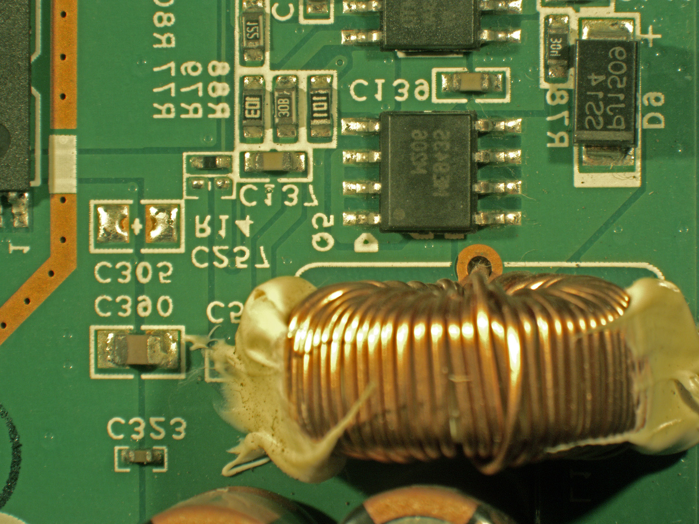

My grandfather clicks a picture of pink flowers and sends it to me as a WhatsApp message.
The internet router is a black box and within is a metallic ecosystem
Outside his house is a moss covered stone carved with letters OFC. Underneath it are optical fiber cables.

The computer center has blue cables that direct messages within a small neighbourhood, known as the Ethernet, and yellow ones carry my grandfather’s message outside to the Reliance local office (network providers)
The Reliance local office receives the message and sends it through its local backbone of over head towers and underground cables
It reaches the coast of Chennai
Reaches the Meta Data centerin Singapore
It passes through a submarine tube in the Indian Ocean
Singapore is the only Meta center in Asia
It passes through a submarine tube in the North Pacific Ocean
Cables like the Bitfrost and Echo carry the message to the West Coast
In Rhode Island the network is containted in overhead towers.

I recieve my grandfathers message in 2.48 seconds